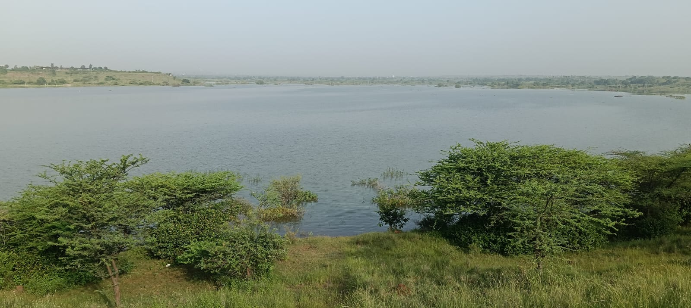
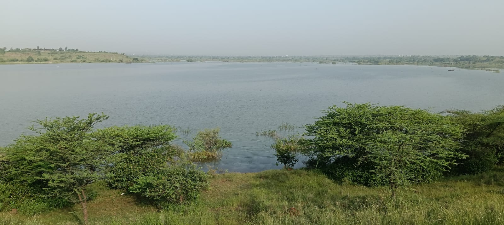

🏡 गावाचा इतिहास
चोपडज गाव हे एक समृद्ध इतिहास असलेले गाव आहे. येथील लोकसंख्या प्रामुख्याने कृषी व्यवसायावर आधारित आहे. स्वातंत्र्यपूर्व काळात येथे ग्रामविकासासाठी अनेक चळवळी झाल्या. गावात अनेक ऐतिहासिक मंदिरे, तळी आणि सामाजिक परंपरा आजही जतन केल्या आहेत.
१९७५ साली ग्रामपंचायतची स्थापना झाली आणि तेव्हापासून गावाने स्वच्छता, डिजिटल साक्षरता आणि पर्यावरण संवर्धनात उल्लेखनीय प्रगती केली आहे.
 
